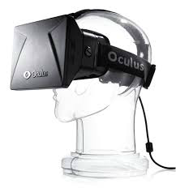
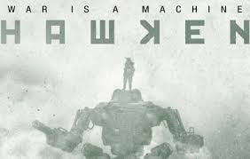

|
Ubisoft abre un nuevo concurso especial con motivo del lanzamiento de Watch Dogs, una de las grandes apuestas de la compañía para este año. Para participar solo tienes que acceder a la página Hackear es nuestra arma, a través de este enlace, y demostrar tu conocimiento acerca del título que saldrá para PS3, PS4, Xbox 360 y Xbox One el próximo 27 de mayo. El plazo de participación estará abierto hasta el 23 de este mismo mes. Para ganar alguno de los múltiples premios que se sortearán tendrás que estar atento a las cuentas de Watch Dogs y Ubisoft España en las redes sociales de Twitter y Facebook. En ellas encontrarás las pistas que te ayudarán a desvelar los enigmas, que te darán puntos si las consigues resolver. Entre los premios se encuentran una PS4, ediciones normarles y Dedsec del juego, monitores LG de 23 pulgadas, tarjetas gráficas Nvidia GTX 780 ti y teclados, ratones y headsets de la marca Mad Catz. Además, entre todos los participantes se realizará un gran sorteo final, en el que podrás obtener un PC Mountain personalizado con la temática de Watch Dogs. El ordenador cuenta con un procesador Intel Core i7 4770, 8 GB de RAM, un disco duro SSD de 128 GB y una tarjeta Nvidia GTX 770 GDDR5. |

|


Close |
Ya os hablé hace unos meses de Virtuix Omni, otro dispositivo de Realidad Virtual que se combina
con Oculus Rift para ofrecer una experiencia de juego totalmente inmersiva al ser nosotros los que andamos,
corremos o saltamos por los juegos. Desde aquella entrada, han ido publicando varios vídeos en su perfil de
YouTube, y el más reciente es en el que prueban Counter Strike Global Offensive contra otros usuarios en una
partida online. ¿El resultado? Tremendamente espectacular. Ojalá también lo hagan compatible con PS4 para
funcionar con Project Morpheus, porque sería un auténtico puntazo. |
|
HAWKEN es un shooter en primera persona multijugador para PC que te pone en el interior de una máquina de guerra mecanizada en el campo de batalla de un mundo distópico llamada Illal.
Con estratégico juego, de ritmo rápido, HAWKEN cuenta con increíbles paisajes alienígenas, mechs personalizables
y actualizables y experiencias dinámicas a través de múltiples modos de juego competitivos. |


Close |